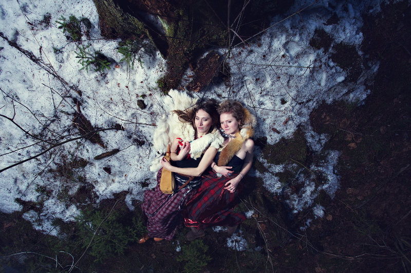
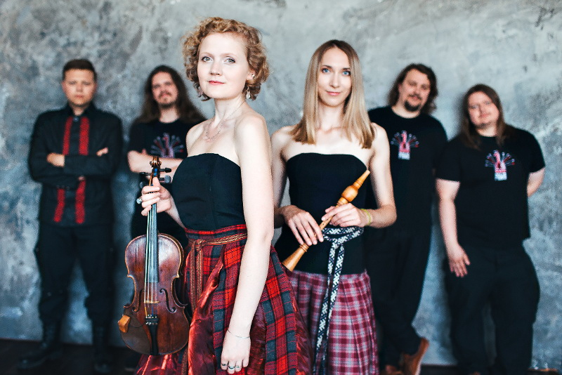

PAWA

Группа Pawa сочетает прошедшие века и современность. На одной сцене — неповторимая эстетика славянской традиции и тяжёлый синтетический звук современного мегаполиса. Оригинальные средневековые музыкальные инструменты, изготовленные по технологии того времени, традиционные уборы и современные синтезаторы, гитара и барабаны

Вялікі канцэртны досвед
З часу стварэння каманды, мы адыгралі вялікую колькасьць канцэртаў, як у клубах, так і на буйных фестывалях.Вось няпоўны спіс фестываляў, у якіх група прымала ўдзел: "WOSP" (Poland),"Basowiszcza"(Poland), "VII Festiwal Niezależnej Kultury Białoruskiej" (Poland), "WrocLove Fest - Noc Świętojańska" (Poland),Tallin Music Week (Estonia) "Woodstock 2013" \"Woodstock 2016" (Ukraine),"Pidkamen"(Ukraine),"Rurisko festival" (Ukraine), "Tripilske kolo" (Ukraine), "Starodawnij Medzibiz" festival (Ukraine),"Forpost" (Ukraine), "TAUTŲ MUGĖ" (Lithuania),"Etno-weekend"(Russia), ''St. Patrick's Day & Night''(Russia), "Priozerskij rubez" (Russia),"Galszanski Castle"(Belarus),"Nasz Grunewald"(Belarus), "Kamyanitsa"(Belarus), "Mecz Lidskaga Zamka"(Belarus),"Dudarski fest"(Belarus),"Kalyadny fest" (Belarus),"Mecz Braczyslawa"(Belarus), fest rycerski " Mscislauje" (Belarus), "Nasledije vekow"(Belarus), ....

Беларуская і Эўрапейская традыцыя
У сваім рэпертуары мы выкарыстоўваем аўтэнтычны матэрыял, сабраны на тэрыторыі сучаснай Беларусі, а таксама Вялікага Княства Літоўскага, рэчы Паспалітай Абодвух Народаў і іншых тэрыторый заходняй Еўропы. Аснову нашага творчасці складаюць традыцыйныя беларускія песні, акрамя таго, мы выконваем кампазіцыі на англійскай, аквітанскай, старанямецкай і польскай мовах.

Склад
Maryna Hryshanova — flute, zaleika, rauschpfeife, vocal;
Vitaly Kasavets — percussions, vocal;
Nadzeja Protko — violin, vocal;
Uras Pankevich — bagpipes, vocal;
Sedziankou Mikita — keybords ,vocal;
Shauchenka Siarhei — guitars ,vocal;
Shauchenka Walery — audio engineer;
Відэа
Яшчэ відэа на youtube.com
PAWA – Ciacierka
PAWA - I'm Shipping Up To Boston (Dropkick murphys cover)
PAWA- CASTLE MIR
PAWA TV SHOW
Спасылкі